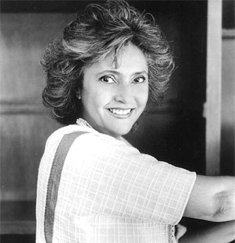

1. Su tItulo: "Como Agua para Chocolate" significa estar en punto de ebullicion, hirviendo, como debe estar el agua para hacer el
chocolate:
“Tita estaba como agua para chocolate, porque hervia de rabia, se sentia mal y enojada con Rosaura, porque esta
queria que su hija la cuidara hasta que ella muriera. Tita no podia creer que su hermana obligara hacer a su hija,
lo mismo que le hicieron a ella, arruinandole la vida. Por eso ella queria vivir hasta lo suficiente, para tratar de
impedir que su hermana siguiera llevando a cabo esa tradicion familiar, la que la había hecho a ella sufrir durante
toda su vida. Tambien Tita estaba perturbada por el comportamiento de Pedro que estaba celoso al saber que ella
se casaria con John, andaba con un humor alterado.”
2.Realismo Magico: El libro esta lleno de realismo magico.Se define como la preocupacion estilistica y el interes de mostrar lo irreal o extraño como algo cotidiano y comun. Narra acciones cotidianas, comunes y naturales; pero en un momento determinado aparece un hecho sorprendente e inexplicable desde el punto de vista de las leyes de la naturaleza. Un relato fantastico causa un efecto de realidad, por lo que el lector encuentra una logica a lo que esta leyendo. El personaje no distingue lo que es real de lo que es irreal. Dentro de este genero lo imposible posible.
3.Idiomas: Como agua para chocolate fue traducido a decenas de idiomas y, en 1994, la novela recibio el premio American Bookseller Book of the Year en Estados Unidos. En 1998 Laura Esquivel retomo las ideas de la obra que le dio fama, y creo una recopilacion de cuentos junto con algunas recetas de cocina llamada intimas suculencias, donde la autora insiste que “Uno es lo que se come, con quien lo come y como lo come.”
4. Capitulos:La novela por entregas esta compuesto por 12 capitulos, uno para cada mes del año. Todos los capitulos tienen nombres de platillos mexicanos que inician con una lista de ingredientes, pero conforme la autora va explicando la preparación de cada platillo, incorpora poco a poco la historia de la novela.
5. Ambiente y Epoca: Los pasajes, los escenarios y hasta los mismos personajes tienen caracteristicas de la epoca de la Revolucion, por lo que la novela retrata muy bien las costumbres, las tradiciones y la forma de pensar de la epoca.
(México D.F., 1950) Escritora mexicana entre cuyas obras sobresale Como agua para chocolate (1989), novela que merecio el aplauso del publico y la critica y que fue llevada tambien con gran exito al cine.Laura Esquivel curso estudios de educadora, aso como de teatro y creacion dramatica, y se especializo en teatro infantil, siendo cofundadora del Taller de Teatro y Literatura Infantil, adscrito a la Secretaría de Educacion Publica. Entre 1979 y 1980 escribio programas infantiles para la cadena cultural de la television mexicana, y en 1983 fundo el Centro de Invencion Permanente, integrado por talleres artisticos para niños, asumiendo su dirección tecnica. A instancias del que era entonces su marido, el cineasta mexicano Alfonso Arau, Laura Esquivel se introdujo en 1983 en la creacion de guiones cinematograficos, debutando en 1985 con el guion de la película Chido One, el Tacos de Oro, historia de un futbolista nominada por su argumento para el premio Ariel de la Academia de Ciencias y Artes Cinematograficas de Mexico. En 1987 su obra de teatro infantil Viaje a la isla de Kolitas obtuvo una acogida muy favorable, manteniendose en cartel durante un año en la capital mexicana.
Como agua para chocolate, es una novela rosa escrita por Laura Esquivel, publicada en 1989, que trata acerca de la vida de una mujer (Tita), sus amorios y la relacion de esta con su familia, todo relacionado con la importancia de la cocina y las recetas tipicas mexicanas de la epoca en que esta ambientada su vida. En la novela se puede apreciar un estilo particular, en el que se emplea un realismo magico con el fin de combinar lo sobrenatural con lo mundano. Fue incluida en la lista de las 100 mejores novelas en español del siglo XX del periodico español "El Mundo".
|
|